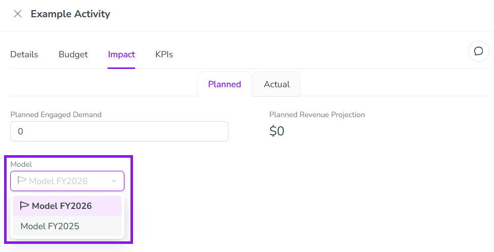
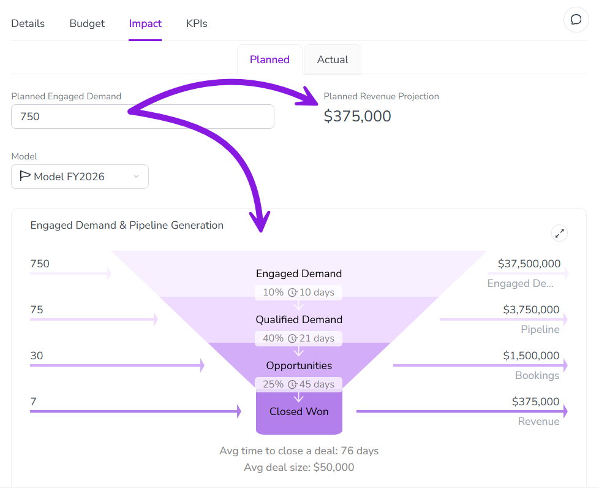
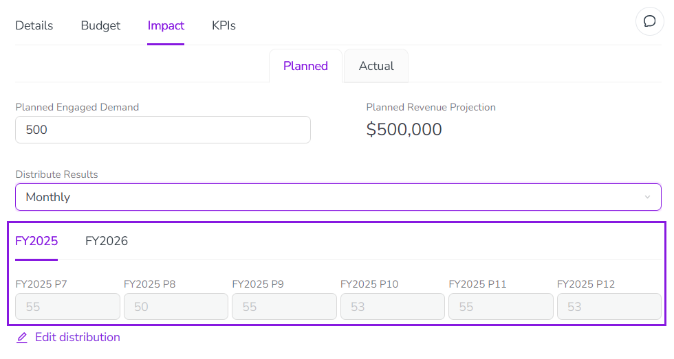

Track and analyze pipeline impact
In Uptempo Campaign Management, impact modeling helps you to demonstrate the impact of your activities on the demand pipeline, and links your marketing efforts to business results.
On your Uptempo activities, you can record the demand you expect the activity to generate. The system uses the planned demand numbers you enter to calculate projections of how your initiatives are likely to influence pipeline and revenue over time. This makes it easier to align marketing plans with organizational goals, and to communicate expected value to stakeholders.
Impact modeling also supports better decision-making during planning. By making the expected impact of activities visible upfront, you can prioritize activities with the greatest potential return, and adjust plans before resources are committed. As execution progresses, the impact model provides a reference point for evaluating whether activities are performing as expected, and where adjustments to the plan may be needed.
How impact modeling works
During the planning phase, you can enter the estimated number of generated inquiries or leads that you're targeting for an activity. Your estimated demand numbers are then fed into a detailed model of your demand pipeline, which uses them to project anticipated revenue from each activity, and when that revenue is expected to be realized.
During the execution phase, you can record actual results for inquiries or leads created by the same activities, as well as for revenue generated by closed deals. By comparing targets and results in real time, you can quickly see what’s working and what’s not, so that you can make informed decisions about how to adjust your strategy.
You can enter impact data for planned targets and actual results at any level of your activity hierarchy. All impact data automatically aggregates up to the top of the activity hierarchy along hierarchy paths, so you can get full insight into performance at every level of your marketing plan.
About pipeline impact models
Your Uptempo administrator sets up the pipeline impact models that the system uses to generate projections. Each pipeline model is built on three core components:
Pipeline structure: The sequential stages of your customer journey and sales pipeline.
Baseline funnel performance metrics: The baseline metrics for your sales process, including typical stage-to-stage conversion rates, velocity (time spent in each stage), and average closed/won deal size.
Segment-specific custom metrics: Custom adjustments to your baseline metrics. These are used for specific segments defined by a combination of dimensions, such as activity attribute values and activity types. For example, you can set custom metrics for cases like if the average deal size for a certain product is higher or lower, or if deals in a particular market close faster (or slower) than average.
When you enter a planned demand target for an activity, Uptempo feeds this input into the pipeline impact model and generates a projection of how much revenue the activity is expected to generate, and when. To do this, it uses segment-specific custom metrics if available (determined by the attributes set on the activity), or otherwise uses the baseline performance metrics.
View activity impact data
For each activity in Campaign Management, the Impact section of the activity's details panel contains its impact modeling data. Here, you can view existing impact data and projections, as well as enter planned and actual impact results.
View an activity's impact data
In the
 Activities section, click on the activity for which you want to view impact data. The activity's details panel opens.
Activities section, click on the activity for which you want to view impact data. The activity's details panel opens.In the details panel, click the Impact section to open it.
The Impact section contains three tabs:
- Planned
Use this tab to enter and view a planned target for demand generated by the activity.
- Actual
Use this tab to enter and view actual results for the demand and revenue attribute to the activity, and compare them to the planned targets.
- Chart
Use this tab to view a chart that visualizes planned demand and actual results over time.
Planned demand targets and projected impact
You enter the target demand that you plan to generate in the Planned tab of an activity's Impact section. After you enter a target, the impact model displays a projection of how the planned demand is expected to influence revenue over the time period during which the activity is in-market.
Enter planned demand targets for an activity
Navigate to the
Activities section.Click on the activity for which you want to enter planned demand targets to open its details panel.
Click Impact, then click Planned.
Optional: If your Uptempo instance has multiple pipeline models available, use the Model menu to select the model you want to use to generate projections for this activity.

Enter the planned demand target (for example, the number of inquiries you expect the activity to generate) into the input field:

Click anywhere outside the input field to finish editing it.
{kind=link}
The planned demand target you entered is saved automatically, and the system uses it to immediately calculate and display revenue and pipeline performance projections:
{kind=link}

Adjust how planned demand is distributed
By default, the impact model projection assumes that the planned demand is generated evenly across the period defined by the activity's in-market dates. For activities with longer in-market periods, the generated demand might be unevenly distributed within the in-market period. For example, you might see a peak in demand during the holiday period followed by a dip afterward, with a corresponding peak and dip in revenue.
To generate more accurate revenue projections for these situations, you can adjust how the planned demand is distributed across the in-market period.
Adjust planned demand distribution for an activity
Navigate to the
Activities section.Click on the activity for which you want to adjust planned demand distribution.
Click Impact, then click Planned.
Use the Distribute Results menu to choose the time granularity you want to use when distributing the planned demand target. You can select between the following options:
- Monthly/Periodically
Enter separate demand target figures for each month or fiscal year period in the in-market period.
- Quarterly
Enter separate demand target figures for each quarter in the in-market period.
- None
Enter a single demand target figure for the entire in-market period. This is the default selection.
After you select the Monthly/Periodically or Quarterly options, additional input fields for the selected time granularity are displayed. If the activity's in-market period spans multiple years, a control to switch between the years is also shown:

To edit the distribution of the planned demand target, click
 Edit distribution. The input fields are unlocked, and you can change their values:
Edit distribution. The input fields are unlocked, and you can change their values: 
The planned demand target distribution you set is saved automatically, and the system displays updated projections based on the new distribution.
Actual demand and revenue results
You enter the actual demand and revenue results achieved in the Actual tab of an activity's Impact section.
Enter actual demand and revenue results for an activity
Navigate to the
Activities section.Click on the activity for which you want to enter actual results to open its details panel.
Click Impact, then click Actual.
Optional: Use the Time Granularity menu to select the time granularity you want to use when entering results. You can choose between the following options:
- Total
Enter results as a single total figure for the entire in-market period. This is the default setting.
- Monthly/Periodically
Enter separate results figures for each month or fiscal year period in the in-market period.
- Quarterly
Enter separate results figures for quarter in the in-market period.
If you select Monthly/Periodically or Quarterly, additional rows are added to the table according to the granularity you chose. Click Add month/quarter to add more table rows.
Enter your actual demand and revenue results into the table. There are table columns for each stage of your demand funnel, and for each stage at which you track revenue:

To save your demand and revenue results, click Save.
The results you entered are displayed in aggregated form on the Actual tab, with a color-coded percentage comparison to the planned/projected figures:

Compare projections and actual results over time
After you have entered a planned demand target, the system generates and displays a chart that plots projections of demand and pipeline/revenue against actual results over time, based on the selected pipeline model's parameters. When you add actual results, these are also plotted on the same chart, making it easy to visualize how the activity performed compared to the projections.
View a chart of impact over time
Navigate to the
Activities section.Click on the activity for which you want to view impact over time.
Click Impact, then click Chart.
The Impact over time chart is displayed:

Interpreting the chart
After you enter planned demand targets, the chart displays two line graphs to visualize planned demand (in purple) and planned revenue (in yellow).
After you enter actual results, the chart also displays two additional line graphs to visualize actual demand (in orange), and actual revenue (in green).
The chart's left y-axis represents generated revenue/pipeline in your plan currency. The right y-axis represents generated demand.
The chart's y-axis represents time, with the scale defined as follows:
The start (left side) of the axis is the start date of the activity's in-market dates
The end (right side) of the axis is either the date when revenue from the last closed/won deal is projected to be realized, the date when the last actual revenue was realized, or the current date (whichever is latest)